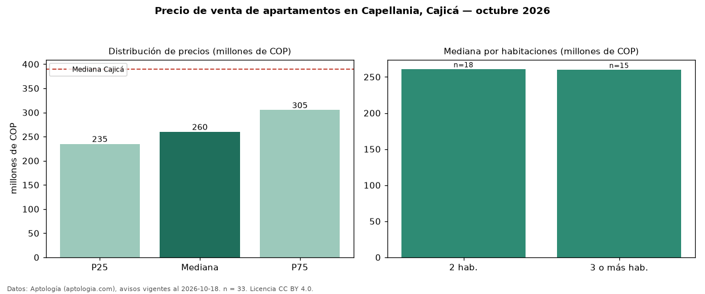

Precio de venta de apartamentos en Capellania, Cajicá — octubre 2026
Con 33 avisos vigentes, el precio mediano de apartamentos en venta en Capellania, Cajicá es COP 260 millones. Eso es 33 % por debajo de la mediana de Cajicá para apartamentos (COP 390 millones). Por metro cuadrado, la mediana es COP 4,79 millones/m² (n = 33 avisos con área), 16 % por debajo de Cajicá (COP 5,67 millones/m²). Por precio mediano es el puesto 9 de 9 barrios de Cajicá con al menos 30 avisos de apartamentos en venta (COP): entre las más económicas. El área mediana anunciada es 56 m². El segmento con más oferta es el de 2 habitaciones (18 avisos, mediana COP 261 millones); pasar de 2 habitaciones a 3 o más habitaciones cambia la mediana −0 %. La administración mediana declarada es COP 183.000 al mes (n = 26). El estrato más frecuente es 3 (61 % de los avisos con estrato). Datos: Aptología (aptologia.com), CC BY 4.0 — https://www.aptologia.com/venta/cajica/capellania. Archivos: PDF, CSV con las cifras y gráfica PNG.

| Avisos únicos | 33 |
|---|---|
| Percentil 25 | COP 235.000.000 |
| Mediana | COP 260.000.000 |
| Percentil 75 | COP 305.000.000 |
| Mediana por m² | COP 4.787.136 |
Fuente: avisos vigentes de portales inmobiliarios recopilados por Aptología, deduplicados (mínimo 30 avisos únicos por celda). Precios pedidos, no cerrados. Fecha: 2026-10-18.